Data Compression with Stochastic Codes
Gergely Flamich
06/02/2026
gergely-flamich.github.io
In Collaboration With


what is data compression?
lossless compression
- Source: \(X \sim P\)
- Code: \(C_P(x) \in \{0, 1\}^*\)
- Decode: \[ C_P^{-1}(C_P(x)) = x \]
- Measure of efficiency: \(\mathbb{E}[\vert C_P(X) \vert]\)
- Entropy code: \[\mathbb{E}[\vert C_P(X) \vert] = \mathbb{H}[P] + \mathcal{O}(1)\]
lossy compression
- Encode: \(C_P(x) \in \{0, 1\}^*\)
- Decode: \[D_P(C_P(x)) = \hat{x} \approx x\]
- Measures of efficiency:
- Rate: \(\mathbb{E}[\vert C_P(X) \vert]\)
- Distortion: \(\mathbb{E}[\Delta(X, \hat{X})]\)
the usual implementation
- Quantizer \(\mathcal{Q}\)
- Source dist.: \(\hat{P} = \mathcal{Q}_\sharp P\)
- Lossless source code \(K_{\hat{P}}\)
Scheme:
\[ C_P = K_{\hat{P}} \circ \mathcal{Q} \]
\[ D_P = K_{\hat{P}}^{-1} \]
transform coding

Usual transform: \(\mathcal{Q}(f(x))\)
what is a stochastic code?
stochastic codes
- Source: \(X \sim P\)
- Perturbation: \(P_{Y \mid X = x}\)
- Mechanism output: \(P_Y\)
- Shared randomness: \(Z \sim P_Z\)
- Code: \(C_{P_Y}(x, z) \in \{0, 1\}^*\)
- Decode: \[ D_{P_Y}(C_{P_Y}(x, Z), Z) \sim P_{Y \mid X = x}\]
common randomness in practice

a general stochastic code
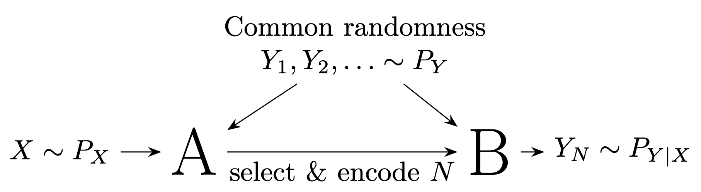
a special stochastic code
Dithering identity
\(c \in \mathbb{R}, U, U' \sim \mathrm{Unif}(-1/2, 1/2)\):
\[ \lfloor c + U \rceil - U \sim c + U' \]
Common randomness: \(Z = U\)
Encode \(K = \lfloor c + U \rceil\)
Communication Complexity
Li and El Gamal:
\[ I[X; Y] \leq \mathbb{E}[|C(X, Z)|] \]
- Relative entropy code: \[ \mathbb{E}[|C(X, Z)|] = I[X; Y] + \mathcal{O}(\log I[X; Y]) \]
- 🤷 rejection code: \(\mathbb{H}[N \mid Z] \approx \mathbb{E}[\log M(X)]\)
- ✅ dithered quantiser: \(\mathbb{H}[K \mid Z] = I[X; Y]\)
why care?
learned transform coding
Pick \(f(x) + \epsilon\): reparameterisation trick!
realistic lossy compression

Right-hand image from Careil et al. [1]
compressing differentially privacy mechanisms
Privacy mechanism \(Y \mid X = x\)
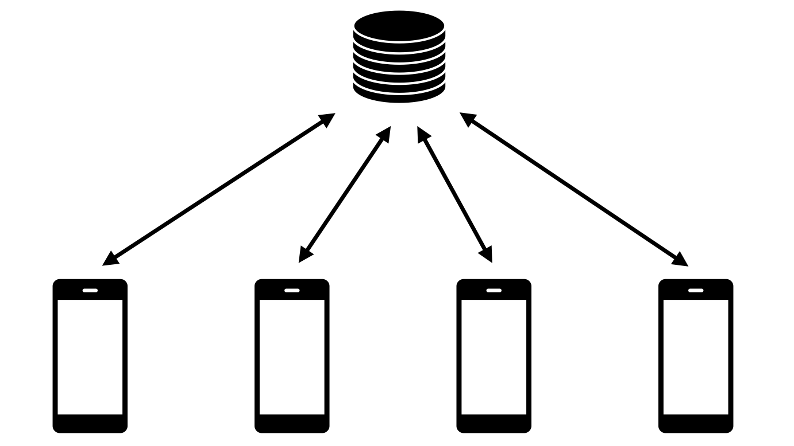
Relative entropy coding using Poisson processes
Poisson Processes
- Collection of random points in space
- Focus on processes over \(\mathbb{R}^D \times \mathbb{R}^+\)
- Exponential inter-arrival times
- Spatial distribution \(P_{X \mid T}\)
- Idea: use process as common randomness in REC
Example with \(P_{X \mid T} = \mathcal{N}(0, 1)\)
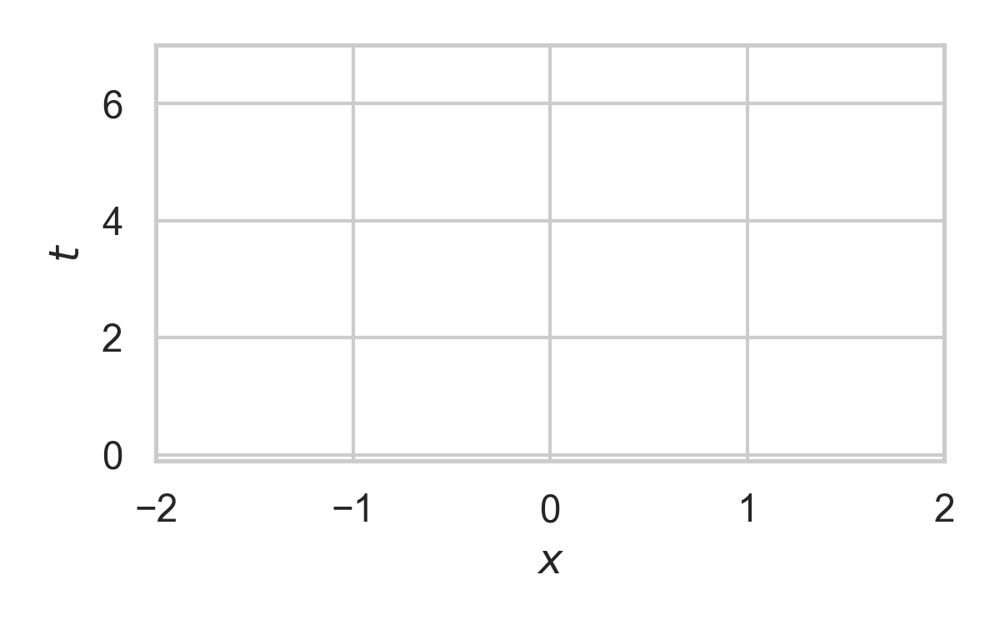
Example with \(P_{X \mid T} = \mathcal{N}(0, 1)\)

Example with \(P_{X \mid T} = \mathcal{N}(0, 1)\)
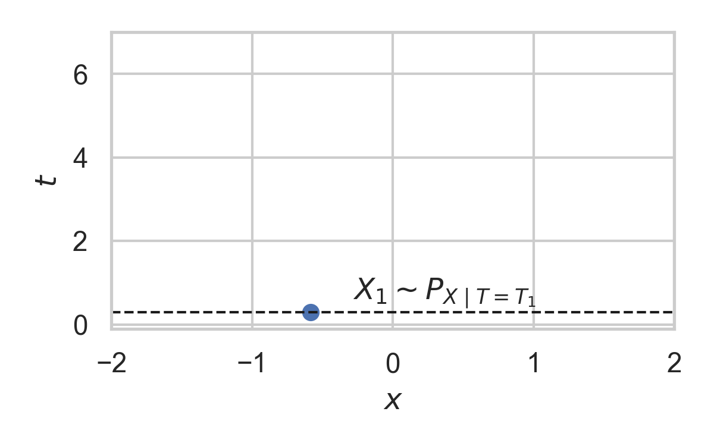
Example with \(P_{X \mid T} = \mathcal{N}(0, 1)\)

Example with \(P_{X \mid T} = \mathcal{N}(0, 1)\)

Example with \(P_{X \mid T} = \mathcal{N}(0, 1)\)
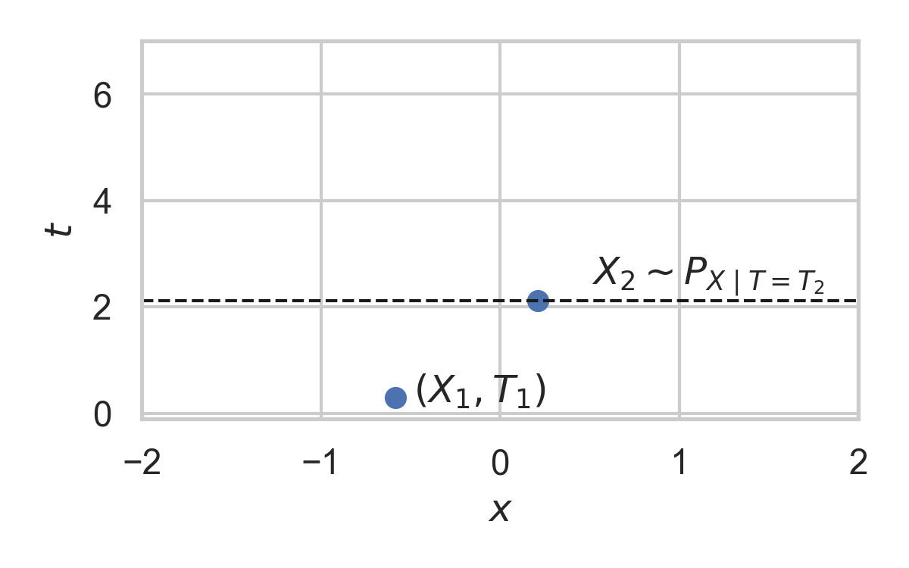
Example with \(P_{X \mid T} = \mathcal{N}(0, 1)\)
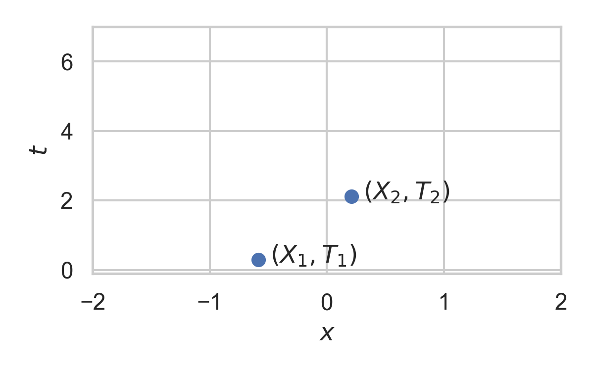
Example with \(P_{X \mid T} = \mathcal{N}(0, 1)\)
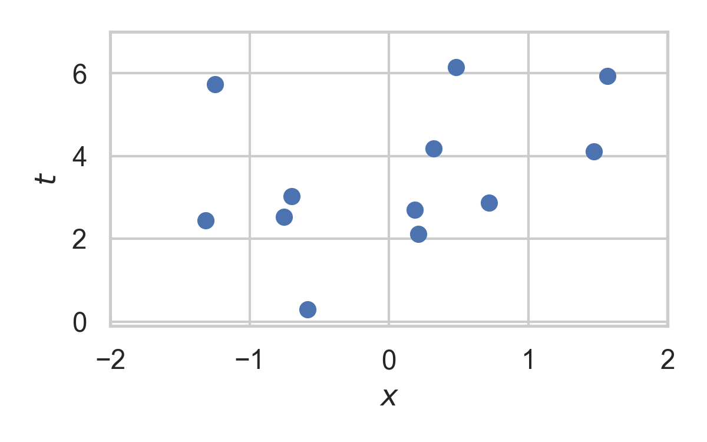
Greedy Poisson Rejection Sampling
Motivation

Fact: \((x, y) \sim \mathrm{Unif}(A) \, \Rightarrow\, x \sim P\)
Can we do the same with Poisson processes?
💡 Idea: scale \(dQ/dP\) non-uniformly
GPRS with \(P = \mathcal{N}(0, 1), Q = \mathcal{N}(1, 1/16)\)

GPRS with \(P = \mathcal{N}(0, 1), Q = \mathcal{N}(1, 1/16)\)

GPRS with \(P = \mathcal{N}(0, 1), Q = \mathcal{N}(1, 1/16)\)

GPRS with \(P = \mathcal{N}(0, 1), Q = \mathcal{N}(1, 1/16)\)
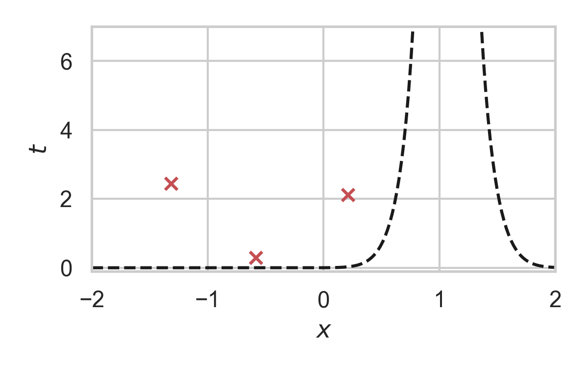
GPRS with \(P = \mathcal{N}(0, 1), Q = \mathcal{N}(1, 1/16)\)

GPRS with \(P = \mathcal{N}(0, 1), Q = \mathcal{N}(1, 1/16)\)

GPRS with \(P = \mathcal{N}(0, 1), Q = \mathcal{N}(1, 1/16)\)

Codelength of GPRS
Selected index \(N\)
\[ \mathbb{H}[N \mid Z] \leq I[X; Y] + \log (I[X; Y] + 1) + 3 \]
Runtime of GPRS
For any \(Q, P\), let \(r = dQ/dP\).
\(\mathbb{E}[N] = \sup r = \Vert r \Vert_\infty\)
Problem: \(\Vert r \Vert_\infty \geq 2^{D_{KL}[Q \,\Vert\,P]}\)
Fast GPRS with \(P = \mathcal{N}(0, 1), Q = \mathcal{N}(1, 1/16)\)

Fast GPRS with \(P = \mathcal{N}(0, 1), Q = \mathcal{N}(1, 1/16)\)
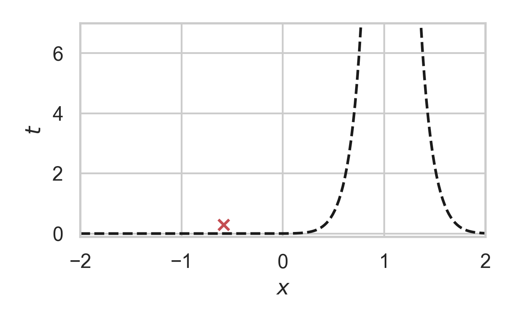
Fast GPRS with \(P = \mathcal{N}(0, 1), Q = \mathcal{N}(1, 1/16)\)

Fast GPRS with \(P = \mathcal{N}(0, 1), Q = \mathcal{N}(1, 1/16)\)
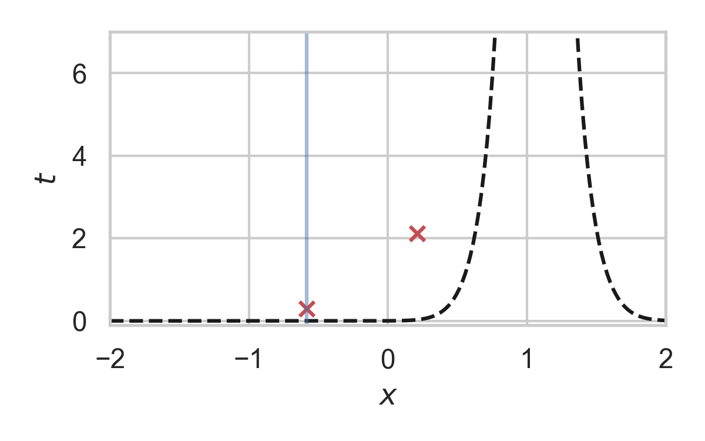
Fast GPRS with \(P = \mathcal{N}(0, 1), Q = \mathcal{N}(1, 1/16)\)

Fast GPRS with \(P = \mathcal{N}(0, 1), Q = \mathcal{N}(1, 1/16)\)

Codelength of fast GPRS
- Now, encode search path \(\nu\).
- Assume density ratio always unimodal.
Runtime of fast GPRS
For any \(Q, P\) over \(\mathbb{R}\), let \(r = dQ/dP\) be unimodal.
\[ \mathbb{E}[\nu] < 2.26 \cdot D_{KL}[Q \,\Vert\,P] + 10 \]
Fundamental Limits
The width function
\(Q \gets P_{y \mid x}, P \gets P_y\)

\(w_P\) is a probability density!
representing divergences
KL divergence:
Channel simulation divergence:
\[ D_{CS}[Q || P] = h[H] \]
\[ D_{KL}[Q || P] \leq D_{CS}[Q || P] \]
tight lower bound

behaviour of the lower bound

- A: \(P = \mathcal{L}(0, 1)\), \(Q = \mathcal{L}(0, b)\)
- B: \(P = \mathcal{N}(0, 1)^{\otimes d}\), \(Q = \mathcal{N}(1, 1/4)^{\otimes d}\)
asymptotic lower bound

Computationally Lightweight ML-based data compression
Data Compression with INRs

Image from Dupont et al. [4]
- computationally lightweight
- short codelength
COMBINER
COMpression with Bayesian Implicit Neural Representations

Image from Blundell et al. [7]
💡Gradient descent is the transform!
COMBINER

COMBINER
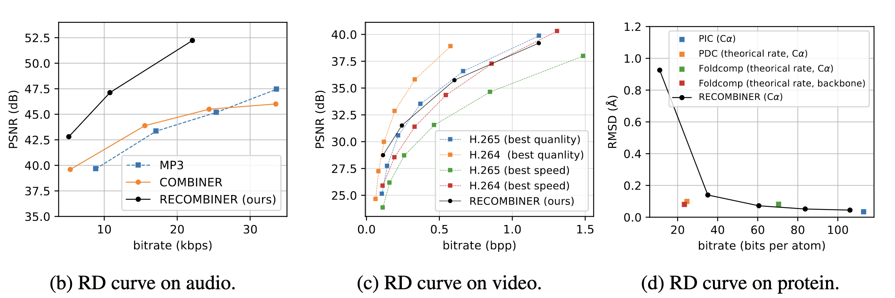
Take-home messages
- Relative entropy coding is a stochastic alternative to quantization for lossy source coding
- Analysed selection sampling-based REC algorithms
- Greedy Poisson rejection sampling is an optimal selection sampler
- Implicit neural represenations are an exciting, compute-efficient approach to data compression with huge potential
Open questions
- Fast multivariate REC?
- "Achievability" theorem for channel simulation divergence
- Practical implementation of common randomness
References I
- [1] Careil, M., Muckley, M. J., Verbeek, J., & Lathuilière, S. Towards image compression with perfect realism at ultra-low bitrates. ICLR 2024.
- [2] C. T. Li and A. El Gamal, “Strong functional representation lemma and applications to coding theorems,” IEEE Transactions on Information Theory, vol. 64, no. 11, pp. 6967–6978, 2018.
References II
- [4] E. Dupont, A. Golinski, M. Alizadeh, Y. W. Teh and Arnaud Doucet. "COIN: compression with implicit neural representations" arXiv preprint arXiv:2103.03123, 2021.
- [5] G. F., L. Wells, Some Notes on the Sample Complexity of Approximate Channel Simulation. To appear at Learning to Compress workshop @ ISIT 2024.
- [6] D. Goc, G. F. On Channel Simulation with Causal Rejection Samplers. To appear at ISIT 2024
References III
- [7] C. Blundell, J. Cornebise, K. Kavukcuoglu and D. Wierstra. Weight uncertainty in neural network. In ICML 2015.